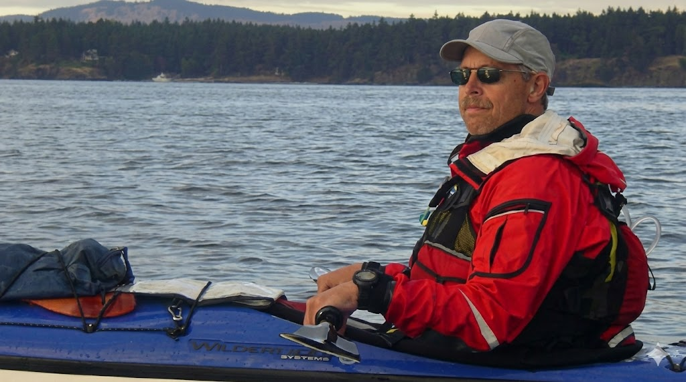
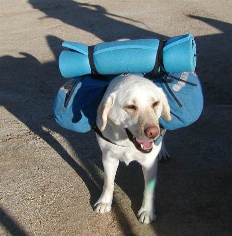

Overview
Chapters
Launching from the shores of Puget Sound, the transition from land travel to water begins. The kayak becomes home for the next several months of coastal navigation.
Navigating through the archipelago of the San Juan Islands. Strong currents, abundant wildlife, and the first taste of the challenges that maritime travel brings.
Through the protected waters of BC's Inside Passage. Fjords, ancient forests descending to the waterline, and remote indigenous communities mark this wild stretch of coast.
Entering Alaskan waters through the Alexander Archipelago. Glaciers calving into the sea, brown bears on distant shores, and the beginning of Alaska's vast wilderness.
Reaching the northern terminus of the Inside Passage at Skagway. The kayaking stage concludes at the gateway to the Yukon, where the next phase of the journey will begin.
Photos & Videos


